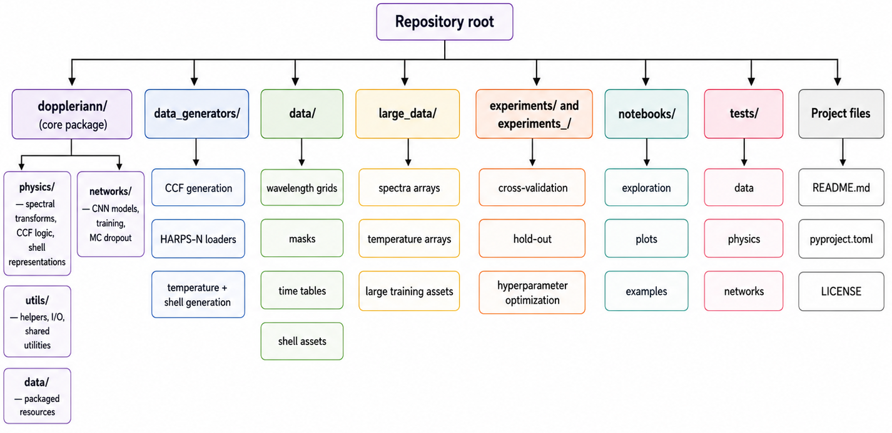

doppleriann
[Site under construction]
doppleriann is a Python package for modeling Doppler shifts in high-resolution stellar spectra using physically motivated spectral-shell
representations and deep learning.
The package was developed to support radial-velocity exoplanet searches in the presence of stellar variability. It provides tools to construct flux- and temperature-based shell representations, compute cross-correlation functions (CCFs), inject synthetic planetary Doppler signals, train neural networks, and perform planetary recovery tests through time-series and periodogram analyses.
As experimental features doppleriann also includes other neural networks architectures to train them with spectra or shells.
Source code
The source code is available on GitHub:
To clone the repository:
git clone https://github.com/igomezv/doppleriann.git
cd doppleriann
For setup instructions, see Installation.
Main features
Flux-based and temperature-based spectral-shell representations.
Weighted and masked shell construction.
CCF calculation and radial-velocity, BIS and FMMW extraction.
Synthetic planetary signal injection, one single circular system.
HARPS-N solar-data preprocessing utilities.
CNN architectures for radial-velocity and Doppler-shift prediction.
Hold-out and cross-validation training strategies.
Monte Carlo dropout inference for predictive uncertainity.
Hyperparameter optimization, model training, and evaluation.
Reproducible experiment folders for the analyses presented in the paper Gómez-Vargas, I. et al (2026).
Overview
doppleriann is designed around a modular workflow:
Load and preprocess high-resolution spectra.
Select relevant spectral regions using masks.
Compute CCF-based radial velocities and activity indicators.
Inject controlled planetary Doppler shifts.
Build flux- or temperature-based spectral-shell representations.
Train neural-network models to predict radial velocity and Doppler shift.
Evaluate recovered signals using hold-out tests, cross-validation, and periodogram-based detection criteria.
The framework is particularly aimed at applications where stellar activity dominates the radial-velocity signal and where low-amplitude planetary signals must be recovered from real spectroscopic data.
Project Structure
This repository is organized around a small set of top-level directories:
doppleriann/contains the library code.data_generators/contains scripts that build intermediate datasets and shell products.experiments/contains training, evaluation, and inference scripts.notebooks/contains analysis scripts and plotting utilities.data/stores smaller generated artifacts used by the workflow.large_data/stores larger intermediate arrays and HDF5 products.

Supporting files at the repository root include README.md, pyproject.toml, and LICENSE.
The docs are built from docs_sphinx/source/.